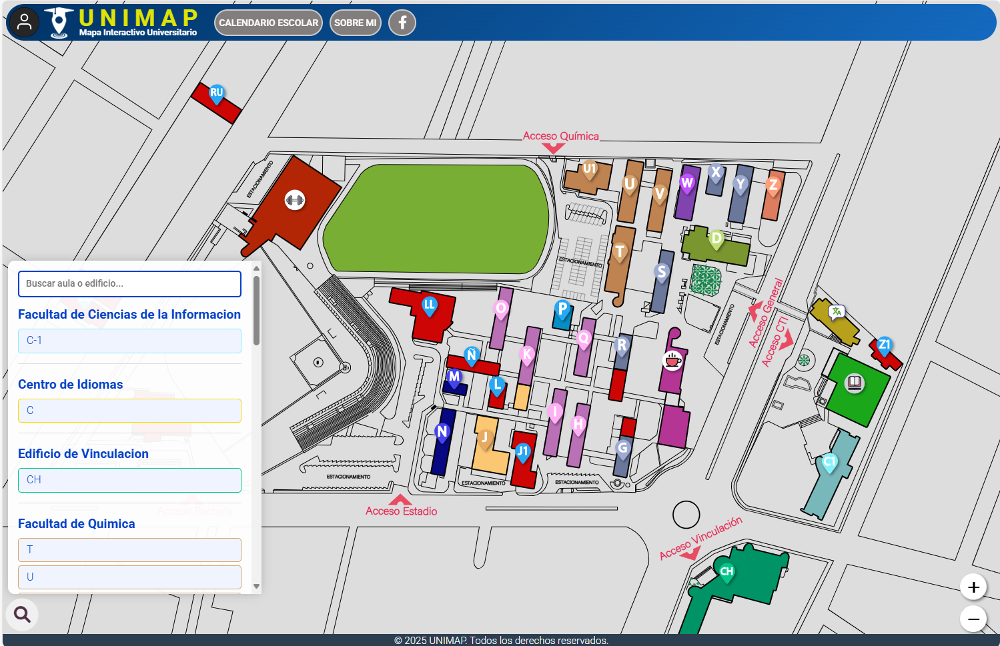
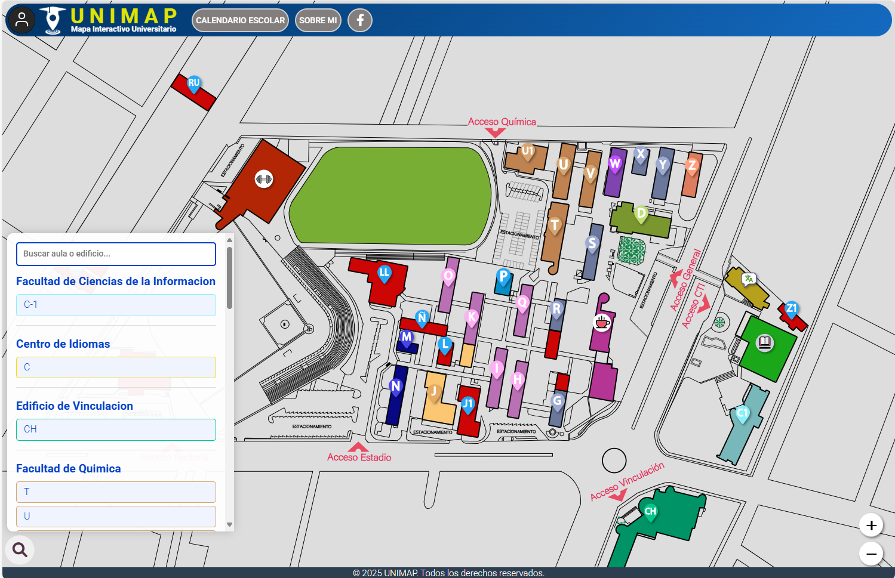

Ayuda con UNIMAP
¿Tienes problemas con UNIMAP? ¡Estamos aquí para ayudarte! Envíanos un correo a soporte.uninap@gmail.com o mediante inbox en nuestra pagina oficial de facebook UNIMAP-Mapa Interactivo Universitario y te responderemos lo antes posible.
Cómo usar el mapa interactivo
A continuación, te explicamos paso a paso cómo funciona el mapa interactivo de UNIMAP y todas las acciones que puedes realizar:
Paso 1: Navega en modo invitado
Al ingresar al enlace de UNIMAP, la página se cargará en el modo predeterminado o "invitado". Para asegurar una buena experiencia, confirma que tu conexión a internet sea estable.
Paso 2: Navegación en el mapa
Usa los controles de zoom (+/-) en la esquina inferior derecha para acercar o alejar el mapa.
En el ordenador, también puedes usar la rueda del ratón.
En dispositivos móviles, usa los botones de zoom o el gesto de "pellizcar" en la pantalla.


Paso 3: Atajos de teclado
Usa los siguientes atajos para una navegación más rápida:
- + o =: Acercar el zoom
- -: Alejar el zoom
Paso 4: Explora el mapa y los edificios
Haz clic y arrastra el mapa para moverte por las diferentes áreas.
Haz clic sobre el pin de un edificio para ver sus características principales.
Paso 5: Usa el buscador de edificios
Si no encuentras un edificio, usa la lupa en la esquina inferior izquierda. Al hacer clic, aparecerá un listado de edificios con un buscador. Selecciona el edificio que buscas y haz clic en su rectángulo para que el mapa te redirija a él.

 


Paso 6: Accede a las opciones adicionales
En un ordenador, encontrarás opciones como el calendario, los enlaces a "Sobre UniMap" y la página de Facebook en la barra superior.
En un dispositivo móvil, haz clic en el símbolo de menú (≡) para ver las opciones, incluyendo el calendario y los enlaces a "Sobre UniMap" y la página de Facebook.


Paso 7: Inicia sesión o regístrate
Para acceder a más opciones, busca el círculo con la imagen de un usuario en la esquina superior izquierda. Al hacer clic, se abrirá un menú con las opciones para iniciar sesión, registrarte o acceder a la ayuda.
Navegadores compatibles
Navegadores compatibles: Brave, Microsoft Edge, Chrome, Opera, Navegador de samsung, Navegador de Google


Navegadores incompatibles
Navegadores incompatibles: Opera GX, navegador integrado de Messenger, navegador integrado de telegram... todos los navegadores integrados de aplicaciones


¿Necesitas ayuda adicional?
Contáctanos enviando un correo a soporte.uninap@gmail.com con una descripción detallada de tu problema. ¡Estamos listos para ayudarte!